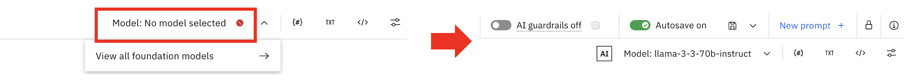
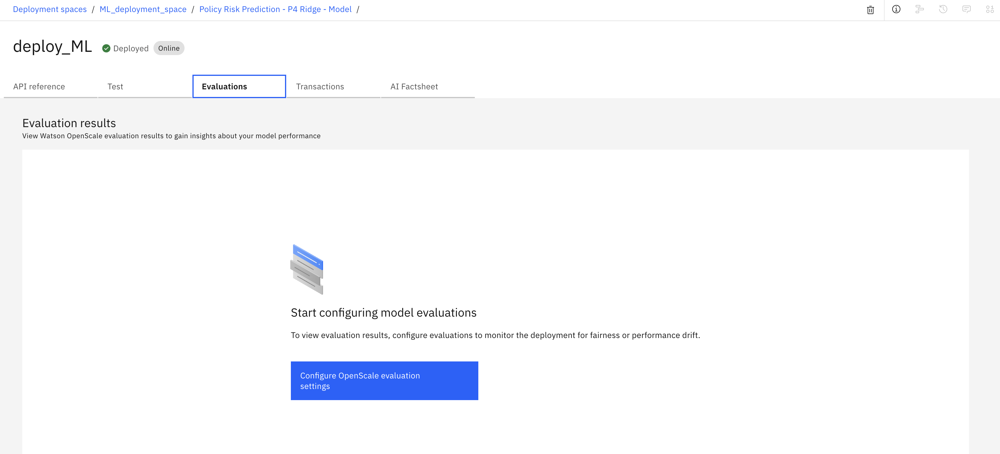
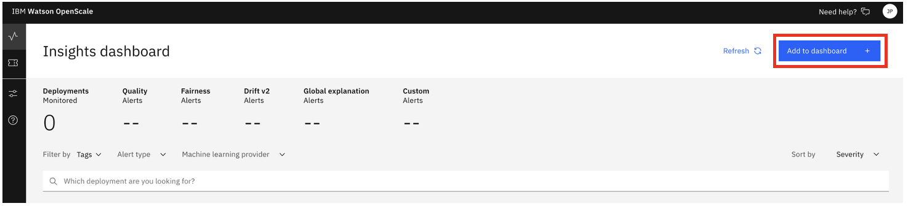
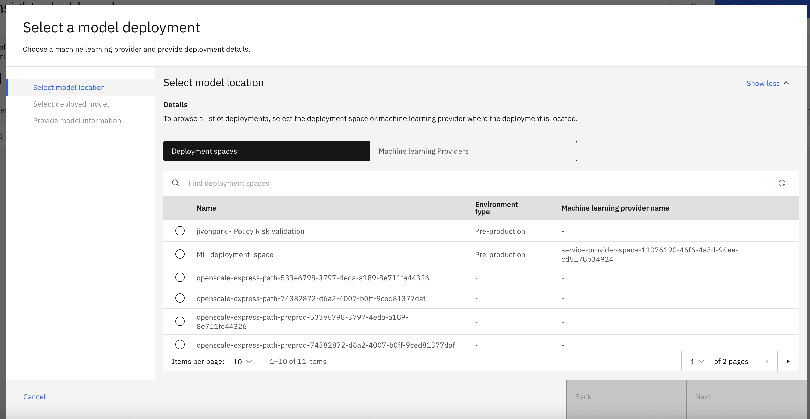

🔧 On-Premise Troubleshooting
온프레미스 환경 문제 해결 가이드
📌 GenAI on-prem evaluation
getting-started-with-watsonx-governance로 작업
✅ ZIP file upload error - CP4D에서 배포한 파일이어야 업로드 가능
on-prem 환경에서 ZIP 업로드가 가능하도록 설정을 확인
경로: getting-started-with-watsonx-governance/project.json
"generator": "icp4data-portal-projects"→ cp4d로 설정되어 있어야 합니다.
해당 설정이 있어야 on-prem 환경에서 ZIP 파일 업로드가 가능합니다.
✅ model existing error - Model 정보 확인
on-prem 환경에서 존재하는 모델 정보인지 확인
경로: getting-started-with-watsonx-governance/assets/wx_prompt
"model_id":"meta-llama/llama-3-3-70b-instruct"model id 확인 만일 안될 경우,
project > prompt file 열어서 UI상에서 모델 변경 후 저장

📌 MLModel on-prem evaluation
evaluate-an-ml-model로 작업
✅ evaluate tab missing error
SaaS의 경우)
deployment spaces > deployments > Evaluation 탭 존재

On-prem의 경우)
해당 탭이 없음
해결 방안)
OpenScale 별도 구동 및 deploy 연결
- deployment space > ML model deploy 후 해당 deploy를 Watsonx OpenScale에서 대시보드에 등록
- 인스턴스 > watson OpenScale > 우측 상단 배치 연결 > 모델을 배포한 deployment 클릭

